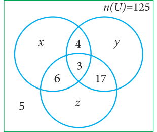
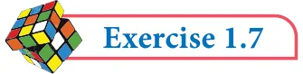
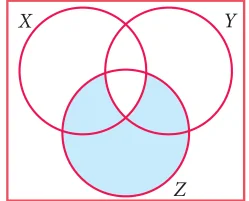

- (i)Number of families buy only one newspaper
- (ii)Number of families buy atleast two newspapers
- (iii)Total number of families in the colony.
- 10.A survey of 1000 farmers found that 600 grew paddy, 350 grew ragi, 280 grew corn, 120
grew paddy and ragi, 100 grew ragi and corn, 80 grew paddy and corn. If each farmer grew atleast any one of the above three, then find the number of farmers who grew all the three.

- 11.In the adjacent diagram, if n(U) \(= 125\) , y is two times of x
and z is 10 more than x, then find the value of x ,y and z.
- 12.Each student in a class of 35 plays atleast one
game among chess, carrom and table tennis. 22 play chess, 21 play carrom, 15 play table tennis, 10 play chess and table tennis, 8 play carrom and table tennis and 6 play all the three games. Find the number of students who play (i) chess and carrom but not table tennis (ii) only chess (iii) only carrom (Hint: Use Venn diagram)
- 13.In a class of 50 students, each one come to school by bus or by bicycle or on foot. 25 by
bus, 20 by bicycle, 30 on foot and 10 students by all the three. Now how many students come to school exactly by two modes of transport?


Multiple Choice Questions
- 1.Which of the following is correct?
\((1) {7} \in {1,2,3,4,5,6,7,8,9,10} (2) 7 \in {1,2,3,4,5,6,7,8,9,10} (3) 7 \notin {1,2,3,4,5,6,7,8,9,10} (4) {7} M {1,2,3,4,5,6,7,8,9,10}\)
- 2.The set \(P =\) {x | \(x \in Z\) , \(- 1< x < 1}\) is a
(1) Singleton set (2) Power set (3) Null set (4) Subset
- 3.If \(U ={x\) | \(x \in N\), \(x < 10}\) and \(A =\) {x | \(x \in N\), \(2 \le x < 6}\) then (A ' ) ' is
(1) {1, 6, 7, 8, 9} (2) {1, 2, 3, 4} (3) {2, 3, 4, 5} (4) { }
- 4.If \(B \subseteq A\) then n(A \(\cap\) B) is
(1) n(A - B) (2) n(B) (3) n(B - A) (4) n(A)
- 5.If \(A =\) {x, y, z} then the number of non- empty subsets of A is
(1) 8 (2) 5 (3) 6 (4) 7
- 6.Which of the following is correct?
\((1) \emptyset \subseteq\) {a, b} \((2) \emptyset \in\) {a, b} (3) {a} \(\in\) {a, b} \((4) a \subseteq\) {a, b}
- 7.If \(A \cup B = A \cap B\), then
\((1) A \ne B (2) A = B (3) A \subset B (4) \subset\)
- 8.If \(B - A\) is B, then \(A \cap B\) is

\((1) A (2) B (3) U (4) \emptyset\)
- 9.From the adjacent diagram n[P(A \(\triangle\) B)] is
(1) 8 (2) 16 (3) 32 (4) 64
- 10.If n(A) \(= 10\) and n(B) \(= 15\), then the minimum and maximum number of elements
in \(A \cap B\) is (1) 10,15 (2) 15,10 (3) 10,0 (4) 0,10
- 11.Let \(A =\) { \(\emptyset\) } and \(B =\) P(A), then \(A \cap B\) is
(1) { \(\emptyset\) , { \(\emptyset\) } } (2) { \(\emptyset\) } \((3) \emptyset (4) {0}\)
- 12.In a class of 50 boys, 35 boys play Carrom and 20 boys play Chess then the number
of boys play both games is (1) 5 (2) 30 (3) 15 (4) 10.
- 13.If \(U =\) {x : \(x \in\) and \(x < 10}\), \(A = {1 2\), ,3,5,8} and \(B = {2,5,6,7,9}\), then n (A \(\cup\) B) ' is
(1) 1 (2) 2 (3) 4 (4) 8
- 14.For any three sets P, Q and R, \(P -\) (Q \(\cap\) R) is
\((1) P -\) (Q \(\cup\) R) (2) (P \(\cap\) Q) \(- R (3)\) (P - Q) \(\cup\) (P - R) (4) (P - Q) \(\cap\) (P - R)
- 15.Which of the following is true?
\((1) A - B = A \cap B (2) A - B = B - A (3)\) (A \(\cup\) B) ' \(= A\) ' \(\cup B\) ' (4) (A \(\cap\) B) ' \(= A\) ' \(\cup B\) '
- 16.If n(A \(\cup B \cup\) C) \(= 100\), n(A) \(= 4x\), n(B) \(= 6x\), n C( ) \(= 5x\), n(A \(\cap\) B) \(= 20\),
n(B \(\cap\) C) \(= 15\), n(A \(\cap\) C) \(= 25\) and n(A \(\cap B \cap\) C) \(= 10\), then the value of x is
(1) 10 (2) 15 (3) 25 (4) 30
- 17.For any three sets A, B and C, (A - B) \(\cap\) (B - C) is equal to
(1) A only (2) B only (3) C only (4) f
- 18.If \(J =\) Set of three sided shapes, \(K =\) Set of shapes with two equal sides and \(L =\) Set of
shapes with right angle, then J Ç K Ç L is (1) Set of isoceles triangles (2) Set of equilateral triangles (3) Set of isoceles right triangles (4) Set of right angled triangles

- 19.The shaded region in the Venn diagram is
\((1) Z -\) (X \(\cup\) Y) (2) (X \(\cup\) Y) \(\cap Z (3) Z -\) (X \(\cap\) Y) \((4) Z \cup\) (X \(\cap\) Y)
- 20.In a city, 40% people like only one fruit, 35% people like only two
fruits, 20% people like all the three fruits. How many percentage of people do not like any one of the above three fruits?
(1) 5 (2) 8 (3) 10 (4) 15